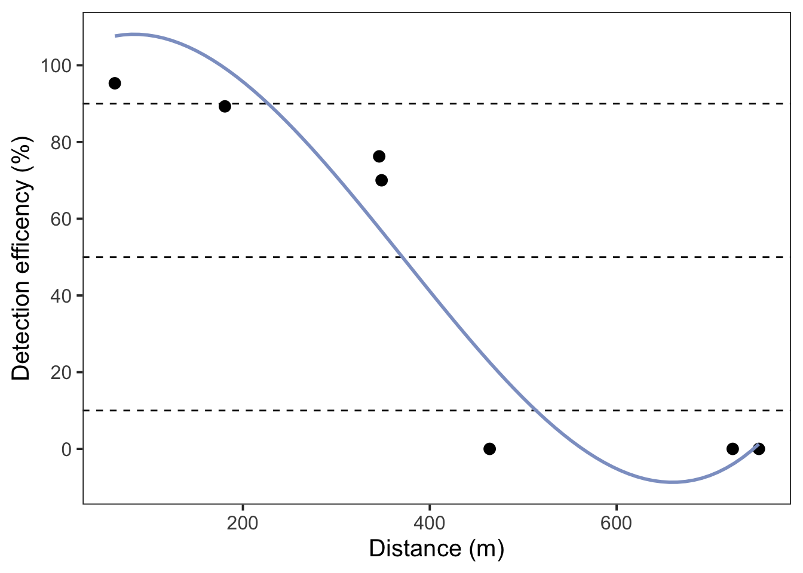
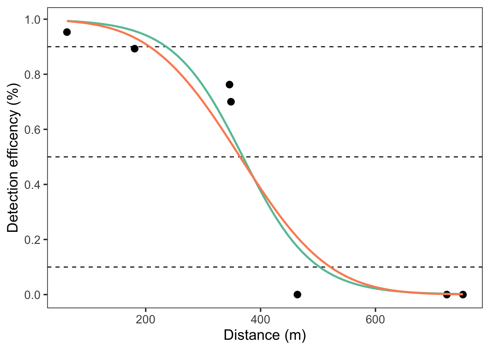

install.packages("usethis")
usethis::use_course("https://github.com/benjaminhlina/glatos-detection-efficiency/archive/refs/heads/main.zip")2 Objectives
This vignette describes methods to quickly and easily calculate the distance from a receiver that a given percentage (e.g., 50%) of detections are heard. The preliminary analysis will allow range transmitters to be deployed for longer duration to estimate detection efficiency over a study period.
The preliminary study design/protocol is the following:
Deploy range transmitters at set distances (e.g., 100, 250, 500, and 750 m) from the receiver you are wanting to range test for 24 hr. The range transmitters used in this vignette had a min delay of 840 s and max delay of 960 s but you could use continuous transmitters or transmitter with different delays.
After 24 hr, retrieve transmitters and receivers and download vrl files.
Import vrl files, receiver, and transmitter location data into Fathom Central. Unfortunately, you will need internet to do this. If you are unable to use the internet (e.g., in the field), download an older version of the detection efficiency software produced by Innovasea and import the vrl, receiver and transmitter location data. The manual for this software is quite good and will walk you through how to get your data into the detection efficiency tool. You can download the older version at the following Innovasea website. You can also calculate initial detection efficiency using R, there is a section below that will describe how to do this.
Highly suggest doing multiple 24 hr deployments at the same distances and/or drifts. If you have multiple sets of detection efficiency you will be able to create a model that fits the data better, thus ultimately improving the redeployment locations of range transmitters for longer duration (e.g., length of study).
Calculate the detection efficiency for each distance over the 24 hr using detection range calculator linked above or in fathom central and export the csv.
Use the exported csv, or object created in R, to estimate the detection efficiency at a given distance using
detection_range_model()from{glatos}. The function,detection_range_model(), will return an estimated distance away from the receiver for a given detection efficiency (e.g., 50%).We can use R, Python, or GIS to create redeployment locations (i.e., latitude and longitude) at the distances the model estimates for the desired detection efficiency (e.g., 50%).
We can redeploy our range transmitters for a given duration (e.g., 6 month, 1 year), to determine changes in detection efficiency over the study period.
The code below will walk through how to use the detection efficiency data produced by Innovasea software to estimate the redeployment distance away from the receiver and create the redeployment location.
You can download and unzip this vignette using the following code:
3 Initial deployment
We will initially deploy range transmitters at set distances away from the receiver. The below workflow will allow you to determine the latitude and longitude of each transmitter deployment and export as an excel and gpx file to easily upload to a gps or sonar unit.
3.1 Load packages and data
We will first load the desired packages in R. We will load {dplyr} for data manipulation processes, {ggplot2} to plot our models, {glatos} to use multiple functions associated with acoustic telemetry including modelling detection range, {mapview} to visualize the deployment and redeployment data, {purrr} to iterate over processes, and {sf} to work with spatial data.
# ---- Bring in R packages ----
{
library(dplyr)
library(ggplot2)
library(glatos)
library(mapview)
library(purrr)
library(sf)
}We will work with the example data set in {glatos} but the receiver deployment data either in table format or as sf object and a shapefile of the body of water you’re working on.
# get path to example receiver_locations file
rec_file <- system.file("extdata",
"sample_receivers.csv",
package = "glatos"
)
# note that code above is needed to find the example file
# for real glatos data, use something like below
# rec_file <- "c:/path_to_file/GLATOS_receiverLocations_20150321_132242.csv"
rcv <- read_glatos_receivers(rec_file)
glimpse(rcv)3.2 Convert to sf object
We will convert deployment data to a sf object and filter the data to only use the glatos array "OSC" for the example. You will not have to do the filtering when using your data but you will want to convert your receiver locations to a sf object and display using mapview().
rcv_osc_sf <- rcv %>%
st_as_sf(
coords = c("deploy_long", "deploy_lat"),
crs = 4326
) %>%
filter(glatos_array %in% "OSC")
# view in mapview
mapview(rcv_osc_sf)We will filter out station number 12 as example to create our initial deployment rings. We will also convert into UTMs so we can estimate distances away from the receiver in meters.
rcv_osc_sf_12 <- rcv_osc_sf %>%
filter(station_no %in% 12) %>%
st_transform(crs = 32617)3.3 Create buffer rings at set distances
Next we will create buffer rings at our set distances away from the receiver. These distances are 100, 250, 500, and 750 but feel free to add more distances. If you add more distances you’re model predictions will likely be more accurate.
# first create a data frame of distances to iterate over
dists <- data.frame(
distance = c(100, 250, 500, 750)
)
# next we will split the data frame by distance and iterate over it using map
buffer_rings <- dists %>%
split(.$distance) %>%
map(~ st_buffer(dist = .x$distance, rcv_osc_sf_12)) %>%
bind_rows(.id = "distance") %>%
st_cast("LINESTRING") %>%
dplyr::select(distance, glatos_array, station_no, ins_serial_no, geometry)
# now view buffer rings
mapview(rcv_osc_sf) +
mapview(buffer_rings)Now that we have the buffer rings, we are going to pick 3 locations for each distance to potentially deploy range transmitters for 24 hr. We will then create an excel and gpx file of all the locations.
First we transform our buffer rings into spatial points, view them using mapview() and filter out the points we want. Then save as an excel and/or gpx file.
buffer_rings_pts <- buffer_rings %>%
st_cast("POINT") %>%
mutate(
id = 1:nrow(.)
) %>%
dplyr::select(id, distance:geometry)View them in mapview, this part will might take a little bit to select each point/figure out which ones you want.
mapview(rcv_osc_sf) +
mapview(buffer_rings_pts)3.4 Select locations for deployment
Then filter out the points we want, this will change depending on your study site and what locations you want. We will transform the projection back to WGS 84 as this is likely what your gps or sonar will want. We will also add in a few columns to conform to GLATOS and OTN data standards and rearrange the column order.
deploy_sites <- buffer_rings_pts %>%
st_transform(crs = 4326) %>%
filter(id %in% c(
4, 49, 155,
407, 456, 472,
671, 696, 720,
835, 876, 920
)) %>%
rename(
receiver_serial_no = ins_serial_no
) %>%
mutate(
deploy_date_time = NA,
deploy_lat = NA,
deploy_long = NA,
bottom_depth = NA,
riser_length = NA,
instrument_depth = NA,
ins_model_number = NA,
ins_serial_no = NA,
transmitter = NA,
transmitter_model = NA,
deployed_by = NA,
recovered = NA,
recover_date_time = NA,
recover_lat = NA,
recover_long = NA,
data_downloaded = NA,
download_date_time = NA,
comments = NA,
expect_deploy_lat = st_coordinates(.)[, "Y"],
expect_deploy_long = st_coordinates(.)[, "X"],
comments = NA
) %>%
dplyr::select(
id:receiver_serial_no,
deploy_date_time:expect_deploy_long, geometry
)3.5 Export to excel and gpx formats
Then we will save as an excel and gpx file. To save as excel we will use {openxlsx}. You will notice that I don’t have it in the load packages area of this vignette. I have not placed it there for the purpose of how R builds vignettes but please add it to your load packages call. You will also need to replace "YOUR_FILE_PATH" with your file path for both saving as an excel and/or gpx file.
# save as excel
openxlsx::write.xlsx(deploy_sites, "YOUR_FILE_PATH.xlsx")
# save as gpx
st_write(deploy_sites, "YOUR_FILE_PATH", driver = "GPX")Now that you’ve created the excel and gpx file you can head out in the field to deploy your ranges transmitters for a given amount of time (e.g., 24 hr). After the time period you will retriever your receivers, download the vrl files and bring them into fathom central or the older detection range software. Once you export the csv you can move on to the next part of this vignette which is the analysis side.
3.6 Preliminary data download
Import vrl files and receiver and transmitter location data into Fathom Central. Unfortunately you will need internet to do this. If you are unable to use the internet (e.g., in the field), download an older version of the detection efficiency software produced by Innovasea and import the vrl and receiver and transmitter location data. The manual for this software is quite good and will walk you through how to get your data into the detection efficiency tool. You can download the older version at the following Innovasea website. Alternatively, you can calculate preliminary detection efficiency in R.
To do this in R can either read in each vrl file into R using {glatos} or {rvdat} or create a vue database, bring in all vrl files, and export the detection file as a csv.
Next, add in a column that is the number of detections expect to be heard in 24 hr for the given delays. To do this we can take the number of seconds in a day, 86,400 s, divided by average delay which in this case is 900 s. This value, 96, means that we should hear a 96 times in a day if a receiver heard all detections.
We can use the following example code to determine the preliminary percentage of detections that were heard at the set distances.
det_summary <- dets %>%
group_by(station, dets_expected, tag_serial_name) %>%
summarise(
dets_heard = n()
) %>%
ungroup() %>%
mutate(
dets_eff = dets_heard / dets_expected,
dets_eff_perc = (dets_heard / dets_expected) * 100
) 4 Analysis
For the analysis you will want to start a new R script, hence why I have left load packages below.
4.1 Load packages and data
# ---- Bring in R packages ----
{
library(dplyr)
library(ggplot2)
library(glatos)
library(mapview)
library(purrr)
library(sf)
}Next, we will bring in our example data which is loaded with {glatos} but you will need to replace sample_detection_efficiency with your data frame either by loading the csv produced by Innovasea software. You can do this multiple ways, I prefer using readr::read_csv() but base R works perfectly fine.
# ----- uncomment the lines below to bring in your data ----
#
# and replace with the file path and name of detection efficiency
# file (replace "YOUR_DET_EFF.csv")
#
# det_eff <- readr::read_csv("YOUR_DET_EFF.csv")
#
# glimpse(det_eff)
# view sample detection efficiency data
sample_detection_efficiency
glimpse(sample_detection_efficiency)4.2 Calculate distances
Next we will use detection_range_model() to produce estimated distances for particular percentage (e.g., 50%). You will want to look through the help page for the function to make sure you’re setting up the model correctly.
Few additional tips:
With fewer data points a third order polynomial often fits the data better, however, this does not mean that either a logit or probit model should not be assessed.
If a third order polynomial model is selected, the formula call can be in two different formats. The preferred and default format is
y ~ -1 + x + I(x ^ 2) + I(x ^ 3) + offset(y-intercept), therefore,model_frameargument needs to be set"data_frame", which is the default, to properly extract parameters and determine distances from a receiver for the percentage of interest. If using thebase::poly()in the formula such as,y ~ -1 + poly(x, 3, raw = TRUE) + offset(y-intercept), then,model_frameargument needs to be set to"matrix". Both formula formats haveoffset()which sets the y-intercept. The y-intercept needs to be set to 100, as x needs to equal 0 m from a receiver because you expect to hear a tag 100% of the time.A third order polynomial will handle preliminary detection efficiency percentages (y variable) as whole numbers as the model is not bound by 0 and 1. While both logit and probit models use percentages as decimals as the models are bound by 0 and 1.
First, we will use a third order polynomial.
# third order polynomial: ave_percent is a whole number
m <- detection_range_model(
avg_percent ~ -1 + distance_m + I(distance_m^2) +
I(distance_m^3) + offset(intercept),
data = sample_detection_efficiency,
percentage = c(10, 50, 90),
link = "polynomial",
model_frame = "data_frame"
)Warning: Check if your formula is correct for the model_frame argumentSecond, we will model the same data using a logit and probit model.
# logit model: aver percent is in decimal form
m1 <- detection_range_model(avg_percent_d ~ distance_m,
data = sample_detection_efficiency,
percentage = c(10, 50, 90),
link = "logit",
summary_stats = TRUE
)
# probit model: aver percent is in decimal form
m2 <- detection_range_model(avg_percent_d ~ distance_m,
data = sample_detection_efficiency,
percentage = c(10, 50, 90),
link = "probit",
summary_stats = TRUE
)We will then view each of the results with the first being the third order polynomial.
m# A tibble: 3 × 19
p distance df chi_square pgof a a_se a_sig b b_se
<dbl> <dbl> <int> <dbl> <dbl> <dbl> <dbl> <dbl> <dbl> <dbl>
1 10 634 4 1304. 4.20e-281 0.202 0.183 0.332 -0.00136 0.000753
2 50 371 4 1304. 4.20e-281 0.202 0.183 0.332 -0.00136 0.000753
3 90 217 4 1304. 4.20e-281 0.202 0.183 0.332 -0.00136 0.000753
# ℹ 9 more variables: b_sig <dbl>, d <dbl>, d_se <dbl>, d_sig <dbl>,
# offset <dbl>, resid_se <dbl>, r2 <dbl>, adj_r2 <dbl>, aic <dbl>Second being the logit model.
m1# A tibble: 3 × 14
p distance df chi_square pgof slope slope_se slope_sig intercept
<dbl> <dbl> <int> <dbl> <dbl> <dbl> <dbl> <dbl> <dbl>
1 10 503. 5 0.751 0.980 -0.0165 0.0155 0.287 6.08
2 50 369. 5 0.751 0.980 -0.0165 0.0155 0.287 6.08
3 90 236. 5 0.751 0.980 -0.0165 0.0155 0.287 6.08
# ℹ 5 more variables: intercept_se <dbl>, intercept_sig <dbl>, z_value <dbl>,
# null_deviance <dbl>, aic <dbl>and third the probit model.
m2# A tibble: 3 × 14
p distance df chi_square pgof slope slope_se slope_sig intercept
<dbl> <dbl> <int> <dbl> <dbl> <dbl> <dbl> <dbl> <dbl>
1 10 521. 5 0.864 0.973 -0.00815 0.00664 0.220 2.97
2 50 364. 5 0.864 0.973 -0.00815 0.00664 0.220 2.97
3 90 207. 5 0.864 0.973 -0.00815 0.00664 0.220 2.97
# ℹ 5 more variables: intercept_se <dbl>, intercept_sig <dbl>, z_value <dbl>,
# null_deviance <dbl>, aic <dbl>Considering the example data set is quite limited, you will notice each model performs differently, especially, the third-order polynomial which fits better than the logit and probit models. Each model predicts that at 50% detections will be heard at roughly 365-370 m away from the receiver.
4.3 Plot all three models
We will first plot the third order polynomial model first because there is a scaling issue as the third order polynomial is bound by 0-100 while the probit and logit models are bound by 0-1.
ggplot() +
geom_point(
data = sample_detection_efficiency,
aes(x = distance_m, y = avg_percent),
size = 3
) +
geom_hline(yintercept = c(10, 50, 90), linetype = 2) +
geom_smooth(
data = sample_detection_efficiency,
aes(x = distance_m, y = avg_percent),
method = "lm",
linewidth = 1,
formula = y ~ -1 + x + I(x^2) +
I(x^3),
method.args = list(offset = sample_detection_efficiency$intercept),
colour = "#8da0cb", se = FALSE
) +
scale_y_continuous(breaks = seq(0, 100, 20)) +
theme_bw(base_size = 15) +
theme(
panel.grid = element_blank()
) +
labs(
x = "Distance (m)",
y = "Detection efficency (%)"
)
I have added in the dotted lines at where the 10, 50, and 90% detection efficiency occurs. We will then plot the logit and probit models next.
ggplot() +
geom_point(
data = sample_detection_efficiency,
aes(x = distance_m, y = avg_percent_d),
size = 3
) +
geom_hline(yintercept = c(0.10, 0.50, 0.90), linetype = 2) +
geom_smooth(
data = sample_detection_efficiency,
aes(x = distance_m, y = avg_percent_d),
method = "glm",
linewidth = 1,
method.args = list(family = binomial(link = "logit")),
colour = "#66c2a5", se = FALSE
) +
geom_smooth(
data = sample_detection_efficiency,
aes(x = distance_m, y = avg_percent_d),
method = "glm",
linewidth = 1,
method.args = list(family = binomial(link = "probit")),
colour = "#fc8d62", se = FALSE
) +
scale_y_continuous(breaks = seq(0, 1, 0.20)) +
theme_bw(base_size = 15) +
theme(
panel.grid = element_blank()
) +
labs(
x = "Distance (m)",
y = "Detection efficency (%)"
)
Now that we have our distances, we will need to create locations at the given percentages (e.g., 50%) we want to deploy for the course of the study. Given the above data we will deploy range transmitters at 365-370 m away from the receiver.
5 Redeployment
5.1 Create buffer ring
The first step in redeployment of the range transmitters is to calculate a buffer ring at the given distance estimated from the models (e.g., 370 m). We will use steps very similar to the deployment steps.
redeploy_loc <- st_buffer(dist = 370, rcv_osc_sf_12) %>%
st_cast("LINESTRING") %>%
mutate(
distance = 370
) %>%
dplyr::select(distance, glatos_array, station_no, ins_serial_no, geometry)
# now view redeployment rings
mapview(rcv_osc_sf) +
mapview(redeploy_loc)Now that we have the redeployment ring, we are going to pick 3 locations to potentially deploy range transmitters for the study period. We will then create an excel and gpx file of all the locations.
First we transform our buffer rings into spatial points, view them using mapview() and filter out the points we want. Then save as an excel and/or gpx file.
redeploy_loc_pts <- redeploy_loc %>%
st_cast("POINT") %>%
mutate(
id = 1:nrow(.)
) %>%
dplyr::select(id, distance:geometry)View them in mapview, this part will might take a little bit to select each point/figure out which ones you want.
mapview(rcv_osc_sf) +
mapview(redeploy_loc_pts)5.2 Select redeployment location
Then filter out the points we want, this will change depending on your study site and what locations you want. We will transform the projection back to WGS 84 as this is likely what your gps or sonar will want. We will also add in a few columns to conform to GLATOS and OTN data standards and rearrange the column order.
redeploy_sites <- buffer_rings_pts %>%
st_transform(crs = 4326) %>%
filter(id %in% c(116, 161, 201)) %>%
rename(
receiver_serial_no = ins_serial_no
) %>%
mutate(
deploy_date_time = NA,
deploy_lat = NA,
deploy_long = NA,
bottom_depth = NA,
riser_length = NA,
instrument_depth = NA,
ins_model_number = NA,
ins_serial_no = NA,
transmitter = NA,
transmitter_model = NA,
deployed_by = NA,
recovered = NA,
recover_date_time = NA,
recover_lat = NA,
recover_long = NA,
data_downloaded = NA,
download_date_time = NA,
comments = NA,
expect_deploy_lat = st_coordinates(.)[, "Y"],
expect_deploy_long = st_coordinates(.)[, "X"],
comments = NA
) %>%
dplyr::select(
id:receiver_serial_no,
deploy_date_time:expect_deploy_long, geometry
)5.3 Export as an excel and gpx formats
Then we will save as an excel and gpx file. To save as excel we will use {openxlsx}. You will notice that I don’t have it in the load packages area of this vignette. I have not placed it there for the purpose of how R builds vignettes but please add it to your load packages call. You will also need to replace "YOUR_FILE_PATH" with your file path for both saving as an excel and/or gpx file.
# save as excel
openxlsx::write.xlsx(redeploy_sites, "YOUR_FILE_PATH.xlsx")
# save as gpx
st_write(redeploy_sites, "YOUR_FILE_PATH", driver = "GPX")Now that you’ve created the excel and gpx file you can head out in the field to deploy your ranges transmitters for your study period. After the time period you will retriever your receivers, download the vrl files and create detection csvs. From there you can filter your range transmitters, calculate the number of heard in a day (e.g., 38) and divide it by the number you’re supposed to hear (e.g., 96), to get your daily detection efficiency. You can then model changes in daily detection efficiency over the course of the study. Congratulations you have now successfully calculated your receiver detection range over your study time period.